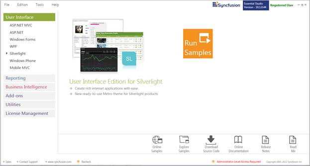
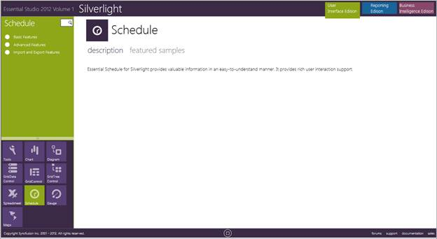

This section covers the location of the installed samples and describes the procedure to run the samples through the sample browser and online. It also lists the location of utilities, assemblies and source code.
Sample Installation Location
The Essential Schedule Silverlight samples are installed under the following location, locally on the disk:
C:\Users\<User Name>\AppData\Local\Syncfusion\EssentialStudio\<Version Name> \Silverlight\Schedule.Silverlight
Viewing Samples
To view the samples, follow the steps given below:
1. Click Start-->All Programs-->Syncfusion-->Essential Studio <v9.4.0.62> -->Dashboard.
The Essential Studio Enterprise Edition window is displayed.

Figure 1: Syncfusion Essential Studio Dashboard
User Interface Edition panel is displayed by default.
 Note: You can view the samples in any of the
following three ways:
Note: You can view the samples in any of the
following three ways:
· Run Samples - Click to view the locally installed samples.
· Online Samples - Click to view online samples.
· Explore Samples - Explore Silverlight samples on disk.
2. Click Run Samples link. Essential Studio Silverlight Edition sample browser is displayed.

Figure 2: Silverlight Edition Sample Browser
3. Schedule sample browser window is displayed.

Figure 3: Essential Schedule Silverlight Samples
4. Select any sample from the samples provided and browse the features.
Source Code Location
The default location of the Essential Schedule Silverlight source code is:
[System Drive]:\Program Files\Syncfusion\Essential Studio\<Version Number>\Silverlight\Schedule.Silverlight\Src